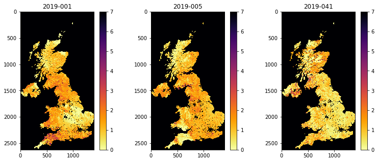

041 GDAL: time series : Answers to exercises
Exercise 1
We have seen in 040_GDAL_mosaicing_and_masking that you can use gdal to creat a GeoTiff format image, for example with:
g = gdal.Warp(output_name, input_name ,format='GTiff',options=['COMPRESS=LZW'])
g.FlushCache()
- Convert the
gdalfilework/stitch_set.vrtto a more portable GeoTiff file calledwork/stitch_set.tif - Confirm that this has worked by reading and displaying data from the file
# ANSWER
import gdal
# Convert the `gdal` file `work/stitch_set.vrt` to a
# more portable GeoTiff file called `work/stitch_set.tif`
# set up the filenames
infile = 'work/stitch_set.vrt'
outfile = 'work/stitch_set.tif'
# convert using gdal.Warp or similar
g = gdal.Warp(outfile, infile ,format='GTiff',options=['COMPRESS=LZW'])
# force write to disk
g.FlushCache()
import matplotlib.pyplot as plt
# ANSWER
# Confirm that this has worked by reading and
# displaying data from the file
# test it by reading and plotting
g = gdal.Open("work/stitch_set.tif")
data = g.ReadAsArray()
fig, axs = plt.subplots(1,3,figsize=(20,2))
axs = axs.flatten()
for i in range(data.shape[0]):
im = axs[i].imshow(data[i],vmax=7,\
cmap=plt.cm.inferno_r,interpolation='nearest')
fig.colorbar(im, ax=axs[i])
axs[i].set_title(bnames[i])

Exercise 2
-
Write a function called
modis_annual_datasetthat takesyear,tileandproductandstepand returns a dictionary of appropriate MODIS datasets. -
Write another function
get_modis_annualthat takes the dictionary of appropriate MODIS datasets. and generates a dictionary of MODIS data values, filtered according to information of the form:warp_args = { 'dstNodata' : 255, 'format' : 'MEM', 'cropToCutline' : True, 'cutlineWhere' : "FIPS='LU'", 'cutlineDSName' : 'data/TM_WORLD_BORDERS-0.3.shp' } sds = ['Lai_500m','LaiStdDev_500m','FparLai_QC'] -
Write a third function
modis_annualthat combines these two functions. - Test your code and plot some results
# ANSWER
msg = '''
Write a function called modis_annual_dataset that takes
year,tile and product and step and returns a dictionary of appropriate
MODIS datasets.
'''
import gdal
from geog0111.modis import Modis
import yaml
from pathlib import Path
def modis_annual_dataset(year,tile,product,step=1):
# load into kwargs
kwargs = {
'tile' : list(tile),
'product' : product,
}
# list of doys we want
doys = "*"
'''
We will gather the data for the year,
tiles and product that we are interested in into a VRT file:
'''
modis = Modis(**kwargs)
ifiles = modis.get_modis(year,doys,step=step)
return ifiles
# ANSWER
msg = '''
Write another function get_modis_annual that
takes the dictionary of appropriate MODIS datasets.
and generates a dictionary of MODIS data values,
filtered according to information of the form:
'''
def get_modis_annual(ifiles,sds=None,warp_args={}):
# loop over SDS sets and read into dictionary
mfiles = {'bandnames':ifiles['bandnames']}
del ifiles['bandnames']
# useful sds default
if sds == None:
sds = ifiles.keys()
for s in sds:
# do this in case we dont need to cut
if warp_args != {}:
g = gdal.Warp("",ifiles[s],**warp_args)
mfiles[s] = g.ReadAsArray()
else:
mfiles[s] = ifiles[s]
return mfiles
# Write a third function modis_annual
# that combines these two functions.
def modis_annual(year,tile,product,step=1,\
sds=None,warp_args={}):
ifiles = modis_annual_dataset(year,tile,product,step=step)
mfiles = get_modis_annual(ifiles,sds=sds,warp_args=warp_args)
# what to do is SDS is None?
return mfiles
# ANSWER : Test
warp_args = {
'dstNodata' : 255,
'format' : 'MEM',
'cropToCutline' : True,
'cutlineWhere' : "FIPS='LU'",
'cutlineDSName' : 'data/TM_WORLD_BORDERS-0.3.shp'
}
sds = ['Lai_500m','LaiStdDev_500m','FparLai_QC']
tile = ['h17v03','h18v03','h17v04','h18v04']
product = 'MCD15A3H'
year = 2019
step = 4
mfiles = modis_annual(year,tile,product,sds=sds,step=step,warp_args=warp_args)
print(mfiles.keys())
dict_keys(['bandnames', 'Lai_500m', 'LaiStdDev_500m', 'FparLai_QC'])
Exercise 3
- Write a function
get_lai_datathat takes as argument:year : integer year tile : list of tiles to process fips : country fips code (e.g. BE for Belgium)
and returns the annual LAI, standard deviation and day of year
- test your code for Belgium for 2018 for tiles
['h17v03','h18v03','h17v04','h18v04'] - show the shape of the arrays returned
Hint: You may find it useful to use geog0111.modis_annual
# ANSWER
from geog0111.modis_annual import modis_annual
import numpy as np
def get_lai_data(year,tile,fips):
'''
Get the annual LAI dataset for fips, tile and year
and return lai,std,doy
'''
# load some data
sds = ['Lai_500m','LaiStdDev_500m']
product = 'MCD15A3H'
warp_args = {
'dstNodata' : 255,
'format' : 'MEM',
'cropToCutline' : True,
'cutlineWhere' : f"FIPS='{fips}'",
'cutlineDSName' : 'data/TM_WORLD_BORDERS-0.3.shp'
}
mfiles = modis_annual(year,tile,product,step=4,\
sds=sds,warp_args=warp_args)
# scale it
lai = mfiles['Lai_500m'] * 0.1
std = mfiles['LaiStdDev_500m'] * 0.1
# doy from filenames
doy = np.array([int(i.split('-')[1]) for i in mfiles['bandnames']])
return lai,std,doy
# Test
tile = ['h17v03','h18v03','h17v04','h18v04']
year = 2018
fips = 'BE'
# test your code for Belgium for 2018 for
# tiles ['h17v03','h18v03','h17v04','h18v04']
lai,std,doy = get_lai_data(year,tile,fips)
print(f'shape of lai: {lai.shape}')
print(f'shape of std: {std.shape}')
print(f'shape of doy: {doy.shape}')
shape of lai: (92, 479, 596)
shape of std: (92, 479, 596)
shape of doy: (92,)